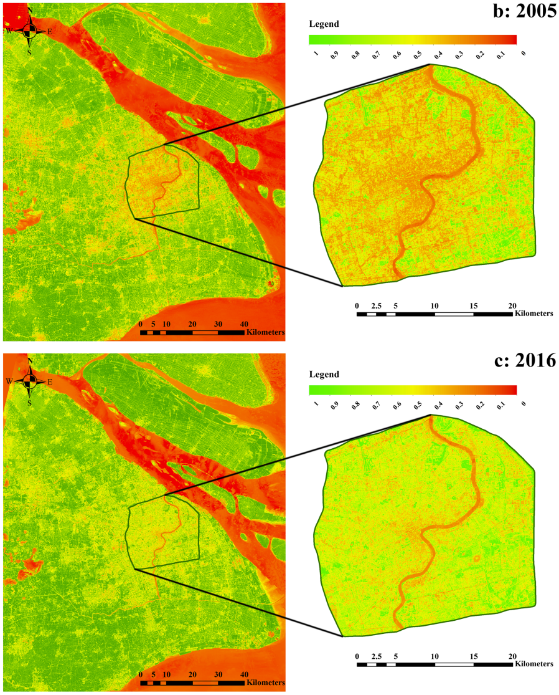

8 Week 8 Temperature and policy
This week, we mainly learnt about the issue of urban heat island effect (UHI) occurs in the process of urbanization in many countries and regions, and tried to extract temperature data from remote sensing images in GEE. In addition to what I learned in lectures and practical, I also learned about recent research methods related to the urban heat island effect and a practical mitigate project for UHI in some cities.
8.1 Summary
This week’s content is somewhat similar to the fourth week, but this week’s lecture only focused on UHI and its impact and the different levels of policy. Besides that, in this week’s practical section, I learnt and tried to extract temperature data from remote sensing imagery and analyze it.
8.1.1 Temperature and policy
- Urban Heat Island and its effects
Urban heat island is a serious issue refers to the urban areas obtain relatively higher atmospheric and surface temperatures than surrounding areas (Mulhern 2020). Based on the previous research, people found that the potential factors caused or exacerbated UHI effect include dark surfaces which can retain solar radiation, less vegetation so that it is not possible to cool the surrounding environment, low Sky View Factor (SVF), cloud cover, building material types, and other aspects. Figure 1 shows the difference in temperature from urban to rural areas by schematically showing the most direct impact of UHI (high temperature).
The impact of UHI on humans, society, and the environment is significant and continuous, including increasing the mortality rate caused by high temperature (Hsu et al. 2021; Manoli et al. 2019; Tan et al. 2010), increasing electricity load (Santamouris et al. 2015), consumption of non-renewable energy sources, pollution to the environment, indirect GDP decline, and other aspects (Cui et al. 2016).
- Relevant policies
Therefore, there are many policies, either global or proposed by national and local governments to mitigate the negative effects of the urban heat island effect. Some of the more representative measures mentioned in the policies to mitigate the urban heat island effect.
New Urban Agenda was adopted at the United Nations Conference on Housing and Sustainable Urban Development in 2016, which provides a roadmap for creating cities and human settlements that are inclusive, sustainable, and resilient, and that promote human well-being and social equity (UN Habitat, n.d.).
Sustainable Development Goals (SDGs) are a set of 17 interconnected global goals adopted by the United Nations in 2015, aimed at addressing the world’s most pressing economic, social, and environmental challenges. The goals cover a range of issues including poverty, hunger, health, education, gender equality, clean water and sanitation, renewable energy, economic growth, and climate action (United Nations, n.d.). Moreover, according to the Goal 11 of the SDGs is “Sustainable Cities and Communities”, its aim is to make cities and human settlements inclusive, safe, resilient, and sustainable (United Nations, n.d.). Since then, many countries and regions have also proposed policies that contribute to sustainable urban development, and have begun to try to implement sustainable urbanization development programs that take into account local conditions.
Different from the above two global policy examples only propose the goal to build sustainable city without detailed approach, Beating the heat handbook (Global & Local level) is one of the earliest handbooks to propose global and local policies for UHI with detailed guidance, although it is very long and covers many detailed aspects (e.g. “ensure mapping of future cooling demand is undertaken in conjunction with mapping of energy demand…”) (UN Environment Programme 2021). Therefore, it may take a lot of time for policymakers to read, which is not realistic, and also policymakers may need to make appropriate adjustments to the general policies proposed in the handbook according to the actual situation of the country. I think maybe if the authors of this handbook streamline the content or break it up into different handbooks for decision-makers with different needs to read, it would be much better and policymakers can access the information they need efficiently.
Two relevant local policy examples
Superblocks
Superblocks is an example policy for building sustainable city in Barcelona, which was first built in 1993 (Superilla Barcelona, n.d.). This idea is try to build large blocks within the city, and all necessary facilities can be found in each blocks (Superilla Barcelona, n.d.). In addition, there are several plans related to the transport and mobility proposed aligned with superblocks to try to solve the traffic congestion issue occurs in superblocks frequently (Barcelona.cat 2018). However, I do not think constructing superblocks can mitigate urban heat island effect well, it seems only try to construct a sustainable, orderly, and beautiful city with better traffic situation, but it has not mentioned any approaches to cool the city. I believe that as the government constantly adjusts its policies and measures, Superblocks can help Barcelona and similar cities cool down.
Medellin Green Corridors
According the introduction related to Cities100: Medellín’s interconnected green corridors, 36 green corridors along 18 roads and waterways were built for decreasing temperature in the urban area (C40Knowledge 2019). According to statistics from C40Knowledge (2019), these green corridors built in Medellin have indeed effectively reduced the average temperature of the city by about 2 degrees Celsius, which indicates that the corresponding measures of this policy can indeed alleviate the urban heat island effect. However, those green corridors take up a lot of valuable space in the city, even on both sides of the most important arterial roads (C40Knowledge 2019), so that even if the city is cool, residents may still choose to migrate to other cities, because there are fewer places to live, rapid housing prices and other problems have a great impact on residents’ daily lives. I think it is possible to retain the green corridor plan, but adjust the area where vegetation and trees are distributed, try to take into account the normal life of residents as much as possible, and build a green corridor to cool the city.
8.1.2 Practical activities for cooling the cities
There are many city decision-makers who are aware of the multifaceted and serious impact of UHI, so many cities have tried different ways to cool the city. These successful methods and experiences can be learned and borrowed by other cities and regions. Following are two representative activities for mitigate UHI.
Metropolitan UHI reduction activities
Examples include green roofing of buildings in the Chicago (Chicago government, n.d.) and tree vouchers in Baltimore (TreeBaltimore, n.d.). In Seattle, there is an mitigating UHI activity about improving the quality of landscaping in the new development process, and the standards that must be met have been set based on the zoning of the properties (Seattle government, n.d.). It may be that these acitivities can be alleviated by such a large city to a much less rapid extent than urban heat, but they are still positive attempts.
Fremantle’s Urban Forest Plan
Maintain and enhance vegetation to 20% canopy coverage is the main activities that plan to implement (City of Frementle, n.d.). The measures used by this activity to mitigate the urban heat island effect are more specific and reasonable, but there may be some biases according to the methods they propose to monitor urban temperature distribution. For example, the Landsat image they use to obtain temperature data is updated every month and calculates the average temperature of each block in the city. The day on which the data is obtained may be cloudy or affected by the climate, and it is not representative of the actual temperature change during the month. In addition, some blocks have a wide range, and the average temperature is difficult to say which areas within the block have a significant cooling effect. As a result, it is possible to increase the frequency of updating data and to reduce the unit in which the temperature is calculated (e.g. per meter) may be able to resolve these issues.
8.1.3 Extracting temperature from satellite data
In order to explore the change of temperature in the city, in addition to regularly measuring the temperature at the ground weather stations, but the number of ground water observation stations built in cities is limited. Therefore, calculating the temperature data through remote sensing images to monitor the distribution of urban temperature is also an acceptable method.
8.1.4 Summary of practical
8.1.5 Questions
No questions so far.
8.2 Application
In this Application section, I will mainly focus on one recent research related to the urban heat island effect to learn how they chose the data set, and the analysis methods they used. Also, there will be a practical mitigate activity for UHI in China to compare the difference activities implemented in different cities with different backgrounds.
- First application example about the satellite data set and methods used in two UHI-related research
Application1——Summary
Wang and Shu (2020) chose Shanghai as the study area to identify changes of temperature in urban and rural area from the beginning of the implementation of effective UHI mitigation measures from 2005 to 2016. The temperature data they used was obtained from the data released by the China Meteorological Administration, based on the piecewise linear fitting method to obtain the temperature distribution of various areas in Shanghai, and combined with GIS methods to visualize the temperature distribution of the city at different times. It is clear from Figure 3 from the research of Wang and Shu (2020) below that the area in orange in 2016 was significantly smaller than in 2005. This also proves that the various strategies implemented in Shanghai to mitigate the urban heat island effect during this period are effective.

Fig.3 Distribution of temperature in Shanghai in 2005 and 2016. Source: Wang and Shu (2020) Discussion
The authors chose to apply the updated and highly reliable temperature data published by the Bureau of Meteorology to help monitor changes in temperature distribution in Shanghai frequently. But because the raw meteorological data obtained can only represent the temperature near the weather station, and cannot obtain a wide range of temperature distributions, the authors chose the linear fitting method to predict the temperature in other regions. In addition, the temperature data they got is not the Land Surface Temperature, which cannot represent the exact UHI distribution to some extent. Besides that, the prediction does not take into account the spatial autocorrelation between two regions that are very close, so it is possible to choose CART regression or ensemble learning methods to predict the temperature of regions without corresponding temperature data, which may be able to obtain more accurate data and improve the validity and credibility of the results.
- Second application example about the satellite data set and methods used in UHI-related research
Summary
Peng et al. (2020) analyzed the impact of water volume and distribution on the urban heat island effect in a joint region combined with four cities in Guangdong Province, China. Different from the method of obtaining temperature data used in Application 1 above, Peng et al. (2020) calculated the corresponding land surface temperature in the study area based on the obtained Landsat 8 OLI/TIRS images from USGS, and performed regression analysis of temperature and water patch size to quantitatively evaluate the correlation between the two variables, which also concluded that there was no significant correlation.
Discussion
This study attempts a remote sensing imagery and remote sensing analysis method to calculate and analyze the distribution of land surface temperature in the study area. However, the authors’ analysis in this study is based on a Landsat 8 image, and it is biased to judge that there is no significant correlation between the two based on the correlation analysis of LST distribution and water patch size at a moment. Multiple remote sensing images should be acquired for regression analysis in a short period of time to avoid a chance result, resulting in higher reducible and more robust results and higher confidence in the results.
8.3 Reflection
This week, I learnt about UHI, a serious problem that accompanies rapid urban development, learned about many different levels of policy, learned two ways to study UHI, and made me realize the importance and difficulty of finding solutions to alleviate UHI.
What is interesting?
I think what’s interesting this week is that the policies for mitigating UHI vary at different levels and the mitigation policies implemented by country and region. There are more novel methods, such as adding green roofs, which can not only cool the city, but also beautify the city. There are also some measures that may not be effective or effective, but will have a negative impact on human daily life, such as large population density large cities with high population density, large areas of increased vegetation cover, may reduce the temperature in the city, but this good environment can be used for human habitation and living area is reduced. But in any case, governments and policymakers are trying to make cities and societies sustainable for longer.
What is useful in the future?
I think it is useful and necessary to continuously monitor temperature changes in cities, because the current UHI problem has not been completely solved. Remote sensing imagery may be more convenient and faster for monitoring urban land surface temperatures, but if you want to increase the frequency of data updates, you may need to combine multiple satellite datasets containing thermal infrared imagery or choose satellite thermal infrared imagery with short revisit periods. moreover, in addition to monitoring the extent of the urban heat island effect, this analysis can also be used to accurately specify appropriate policies, such as the precise selection of buildings with green roofs or the planting of several trees according to the LST distribution map. In this way, effective resources can be used to efficiently alleviate UHI, reducing the occurrence of conflicts with human market life.
What can be instead or not be useful?
When searching for literature on methods for obtaining temperature data to monitor urban temperatures, I found that there is temperature data measured by weather stations, and I think this method can be replaced, because there is a certain difference between air temperature and land surface temperature, even if more temperature data can be obtained.